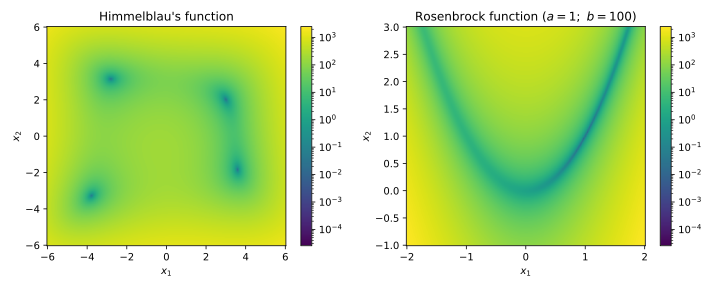

Test Functions
Before diving into specific optimization algorithms, we will first take a look at some test functions that can help us check how well our algorithms are performing. There are lots of Test functions for optimization out there, serving different purposes. Because we want to visualize the test functions, we will only consider functions on \(\mathbb{R}^2\).
Base Class
Before starting with any concrete functions, we will first define an
abstract class ObjectiveFunction which will be the base class for all test
functions.
import numpy as np
from abc import ABC, abstractmethod
from matplotlib.colors import Normalize
class ObjectiveFunction(ABC):
def __init__(self, *, args=()):
self.args = args
def __call__(self, p, *, deriv=0):
if deriv == 0:
return self._get_value(p, self.args)
elif deriv == 1:
return self._get_gradient(p, self.args)
else:
raise ValueError('Only 0 or 1 allowed for deriv!')
@abstractmethod
def _get_value(self, p, args=()):
pass
@abstractmethod
def _get_gradient(self, p, args=()):
pass
This abstract class defines the __call__ method, which will be executed
when we call an instance of a class derived from ObjectiveFunction. Because
the function value and gradient depend on the specific function, they are
decorated with the @abstractmethod decorator. This means that any class
derived from ObjectiveFunction must implement these two methods.
We may also want to plot the function and possibly the optimization path. We can define two functions for this purpose.
def plot_2d_objective_function(ax, func, xs, ys, norm=None):
p_grid = np.meshgrid(xs, ys)
values = func(p_grid, deriv=0)
dx = (xs.max() - xs.min()) / (len(xs) - 1.0)
dy = (ys.max() - ys.min()) / (len(ys) - 1.0)
extent = [xs.min() - 0.5*dx, xs.max() + 0.5*dx,
ys.min() - 0.5*dy, ys.max() + 0.5*dy]
ax.set_xlabel('$x_1$')
ax.set_ylabel('$x_2$')
if norm is None:
normalise = Normalize(vmin=values.min(), vmax=values.max())
else:
normalise = norm
normalise.vmin = values.min()
normalise.vmax = values.max()
im = ax.imshow(values, origin='lower', aspect='auto',
extent=extent, norm=normalise)
ax.get_figure().colorbar(im, ax=ax)
def plot_2d_optimisation(ax, func, xs, ys, norm=None, traj=None):
plot_2d_objective_function(ax, func, xs, ys, norm=norm)
if traj is not None:
xlim = ax.get_xlim()
ylim = ax.get_ylim()
ax.plot(traj[:, 0], traj[:, 1], c='w', marker='o')
ax.set_xlim(xlim)
ax.set_ylim(ylim)
Himmelblau’s Function
Himmelblau’s function is a rational function defined by
It has 4 local minima, all with the same function value \(f(x^{*}) = 0\).
class HimmelblauFunction(ObjectiveFunction):
def _get_value(self, p, args):
x, y = p
return (x**2 + y - 11.0)**2 + (x + y**2 - 7)**2
def _get_gradient(self, p, args):
x, y = p
fx = 4.0 * x * (x**2 + y - 11.0) + 2.0 * (x + y**2 - 7)
fy = 2.0 * (x**2 + y - 11.0) + 4.0 * y * (x + y**2 - 7)
return np.array([fx, fy])
Rosenbrock’s Function
Rosenbrock’s function is a non-convex function defined by where \(a\) and \(b\) are parameters. The function has a global minimum at \(x = (a, a^2)\) with \(f(x^{*}) = 0\). This global minimum lies in a long, narrow, and relatively flat valley, which makes it difficult to find.
class RosenbrockFunction(ObjectiveFunction):
def _get_value(self, p, args):
x, y = p
a, b = args
return (a - x)**2 + b * (y - x**2)**2
def _get_gradient(self, p, args):
x, y = p
a, b = args
fx = 2.0 * (x - a) + 4.0 * b * x * (x**2 - y)
fy = 2.0 * b * (y - x**2)
return np.array([fx, fy])
We can use our routine plot_2d_objective_function to plot
these two functions:
import numpy as np
import matplotlib.pyplot as plt
from matplotlib.colors import LogNorm
from objective_function import RosenbrockFunction, HimmelblauFunction, \
plot_2d_objective_function
norm = LogNorm()
hf = HimmelblauFunction()
xs1 = np.linspace(-6.0, 6.0, 200)
ys1 = np.linspace(-6.0, 6.0, 200)
rf = RosenbrockFunction(args=(1.0, 100.0))
xs2 = np.linspace(-2.0, 2.0, 200)
ys2 = np.linspace(-1.0, 3.0, 200)
fig, axs = plt.subplots(1, 2, figsize=(10, 4))
axs[0].set_title('Himmelblau\'s function')
plot_2d_objective_function(axs[0], hf, xs1, ys1, norm=norm)
axs[1].set_title(r'Rosenbrock function ($a = 1;\ b = 100$)')
plot_2d_objective_function(axs[1], rf, xs2, ys2, norm=norm)
fig.tight_layout()
plt.show()
